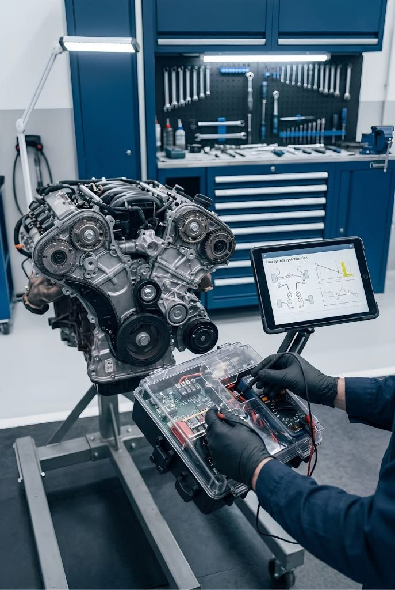
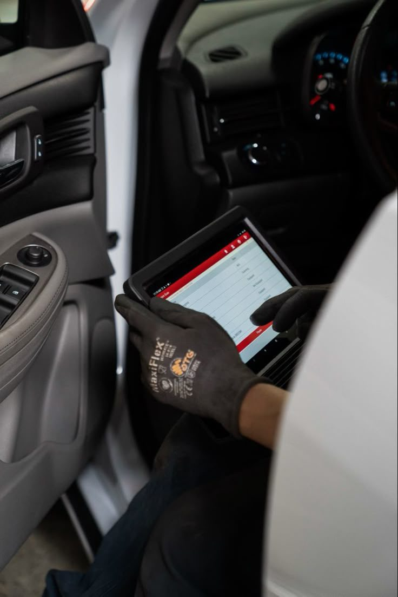
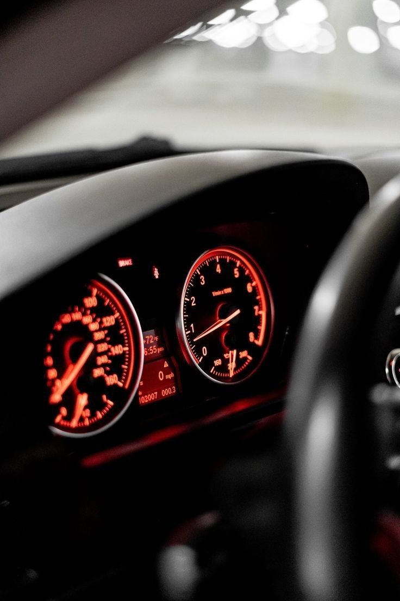

INICIALAM / 101
Mecánica automotriz básica
El punto de partida: cómo funciona un auto y cómo se repara con criterio.
- Motor de cuatro tiempos y sistemas auxiliares
- Frenos, suspensión y dirección
- Herramientas, medición y normas de seguridad
Cursos de mecánica automotriz e inyección electrónica con práctica real en taller, instructores en actividad y equipamiento profesional de diagnóstico.


Somos un centro de formación para quienes quieren trabajar, o trabajan, en el taller mecánico. Partimos de lo básico y llegamos al diagnóstico electrónico moderno, siempre sobre motores y vehículos reales.
Desde el primer día de taller hasta la lectura avanzada de parámetros y señales de la ECU.
El punto de partida: cómo funciona un auto y cómo se repara con criterio.
Sensores, actuadores y estrategias de inyección en motores nafteros.
Interpretá códigos de falla y datos en vivo para llegar a la causa, no al síntoma.
Circuitos, redes de comunicación y reparación de módulos de control.
Clases cortas y claras sobre el funcionamiento de cada componente.
Multímetro, osciloscopio y escáner sobre bancos de prueba y motores reales.
Resolvés fallas reales con acompañamiento del instructor y un método repetible.

Los grupos son reducidos para que cada alumno practique. Consultá disponibilidad antes de inscribirte.
Av. Ejemplo 1234, Ciudad · Lunes a viernes de 9 a 20 h · Sábados de 9 a 14 h